Miareczkowanie to metoda określania ilości danego związku (najczęściej analitu) przez reakcje z drugim związkiem (titrantem). Do miareczkowania używamy specjalnego szklanego sprzętu zwanego biuretą, pod biuretą ustawia się kolbkę stożkową z badanym roztworem. Biureta jest szklaną rurą z zaznaczoną podziałką umożliwiającą dokładne odczytanie objętości dodanego z niej roztworu. Dodatkowo jest ona zakończona kranikiem, który umożliwia (lub powinien umożliwiać) dodawanie roztworu po kropli do postawionej pod nią kolby. W biurecie umieszczamy roztwór titrantu (roztwór, którym miareczkujemy), a w kolbce roztwór analitu (roztwór, który badamy).
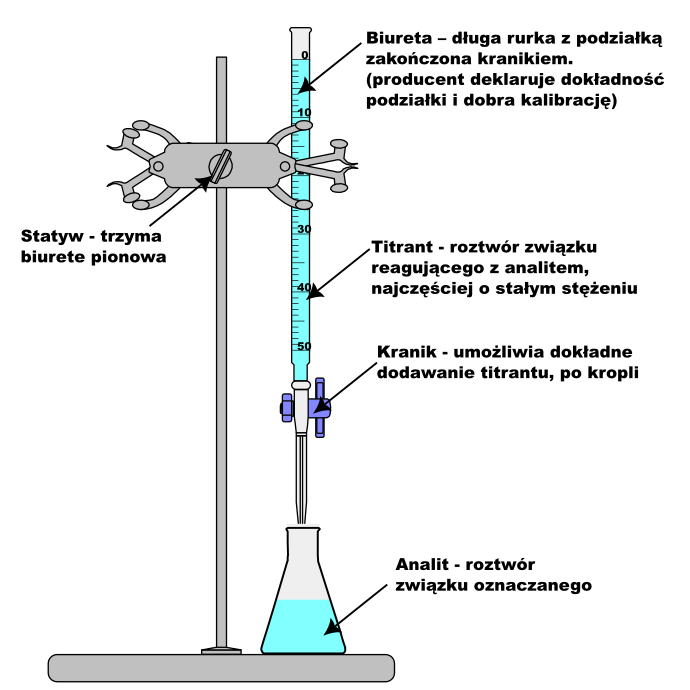
Biureta – długa rurka z podziałką zakończona kranikiem. (producent deklaruje dokładność podziałki i dobra kalibrację)
Jak nie pomylić titrantu z analitem. Z pomocą przychodzą nam skróty międzynarodowe:
\[\mathbf{Titrant\ = \ tit\ \ \ \ \ \ \ \ \ \ analit\ = \ anal}\]
Więc \(\mathbf{tit}\) na górze, a \(\mathbf{anal}\) na dole, a jak masz wątpliwości to spójrz na chemicę.
aby dało się ją wykorzystać w miareczkowaniu:
- barwa reakcji się musi zmieniać – substrat i produkt muszą mieć inne barwy (ale to idzie obejść używając wskaźników), inaczej nie będziemy wiedzieć, kiedy cały analit (substrat) przereagował.
- reakcja musi zachodzić z dużą wydajnością (powyżej 99.5%), inaczej będziemy mieć zaburzony wynik przez powstawanie produktów ubocznych
- reakcja musi przebiegać powtarzalnie, inaczej dostaniemy czasem poprawny, a czasem niepoprawny wynik, i co gorsza nie będziemy w stanie powiedzieć, kiedy ten wynik poprawny.
- reakcja musi przebiegać szybko – tzn. Nie możemy czekać np. minuty, żeby reakcja przebiegła całkowicie, inaczej znaczyłoby to, że po każdej kropli musimy poczekać minutę. Ponieważ tych kropli musimy dodać sporo czekając za każdym razem minutę musielibyśmy miareczkować ponad dzień. Ten problem idzie też ominąć tzw. miareczkowaniem odwrotnym. To znaczy dodając określony (o znanej ilości moli) nadmiar związku reagującego z analitem, następnie zostawiając szczelnie zamkniętą reakcję na weekend, podczas którego ta reakcja przebiega całkowicie, a następnie miareczkując nadmiar dodanego związku, reagującego z analitem. Wiedząc ile związku pomocniczego dodaliśmy na początku i ile zostało tego związku po reakcji możemy powiedzieć, ile związku zużyto na interesujący nas analit.
Oznaczanie zawartości fenolu w ściekach przemysłowych możne przebiegać w kilku etapach opisanych poniżej:
Etap I: Otrzymywanie bromu.
Etap II: Bromowanie fenolu.
Etap III: Wydzielanie jodu.
Etap IV: Miareczkowanie jodu.
W pierwszej części zadania mieliśmy za zadanie napisać reakcję otrzymywania bromu z bromków i bromianu, przez bilans redoksa z informacją wstępną. Dla uproszczenia podam je:
\[BrO_{3}^{-} + 5Br^{-} + 6H^{+} \rightarrow Br_{2} + {3H}_{2}O\]
Gdy do zakwaszonego roztworu fenolu zawierającego nadmiar jonów bromkowych wprowadzi się bromian(V) potasu w nadmiarze w stosunku do fenolu, to wytworzony brom (w ilości równoważnej do bromianu(V) potasu) reaguje z fenolem zgodnie z równaniem (etap II):
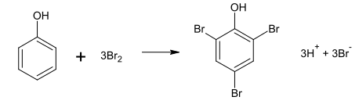
Następnie do powstałej mieszaniny dodaje się jodek potasu. Brom, który nie został zużyty w reakcji bromowania, powoduje wydzielenie równoważnej ilości jodu (etap III):
\[2I^{-}\ + \ Br_{2}\ \rightarrow \ 2Br^{-}\ + I_{2}\]
Podczas kolejnego etapu (etapu IV) jod miareczkuje się wodnym roztworem tiosiarczanu sodu (\(Na_{2}S_{2}O_{3}\)), co można zilustrować równaniem:
\[2S_{2}O_{3}^{2 -}\ + \ I_{2}\ \rightarrow \ S_{4}O_{6}^{2 -} + \ 2I^{-}\]
Oblicz stężenie molowe fenolu w próbce ścieków o objętości 100.0 \(cm^{3}\), jeżeli wiadomo, że w etapie I oznaczania zawartości fenolu powstało 0.256 grama bromu oraz że podczas etapu IV oznaczania tego związku na zmiareczkowanie jodu zużyto 14.00 \(cm^{3}\) roztworu tiosiarczanu sodu o stężeniu 0,100 \(mol · dm^{–3}\).
W przypadku tego oznaczenia dodawaliśmy pomocniczo bromu oraz jodków, w celu całkowitego przereagowania bromu. Możemy obliczyć ilość moli jodu pozostałego po reakcji przez miareczkowanie tiosiarczanem \(S_{2}O_{3}^{2 -}\). Z stechiometrii wynika, że ilość moli jodu jest równa ilością moli tiosiarczanu:
\[n_{I_{2}} = \frac{n_{S_{2}O_{3}^{2 -}}}{2} = \frac{(0.1·0.014)}{2} = 0.0007\]
Wówczas również z stechiometrii reakcji możemy powiedzieć, że nadmiarowa ilość moli bromu, (tego pozostałego po reakcji z fenolem) wynosi tyle, co było jodu, którego ilość określiliśmy miareczkowaniem:
\[n_{Br_{2}}^{zostal} = n_{I_{2}} = 0.0007\]
Oczywiście, początkową ilość moli bromu możemy określić z podanej masy. Oczywiście ten brom zużyty został na fenol, natomiast nieprzereagowany nadmiar tego halogenu pozostał. Jego ilość określiliśmy powyżej. Możemy zapisać bilans bromu i kolejno wstawiamy dane liczbowe.
\[n_{Br_{2}}^{0} = n_{Br_{2}}^{fenol} + n_{Br_{2}}^{zostal}\]
\[\frac{0.256}{2·79.9} = n_{Br_{2}}^{fenol} + 0.0007\]
\[n_{Br_{2}}^{fenol} = \frac{0.256}{2·79.9} - 0.0007 = 9.02·10^{- 4}\]
Z otrzymanej ilość bromu, która została zużyta na fenol możemy określić ilość fenolu przez stechiometrię reakcji:
\[n_{fenol} = \frac{n_{Br_{2}}^{fenol}}{3} = \frac{9.02·10^{- 4}}{3} = 3.007·10^{- 5}\]
Do miareczkowania możemy używać następujących typów reakcji:
- \(\mathbf{kwasowo\ –\ zasadowe}\) miareczkowanie alkacymetryczne
- redoks.
- strąceniowe
- kompleksometryczne
- inne
Po za klasycznym badaniem roztworów przy użyciu wskaźników dodatkowo znane są metody oparte na pomiarze przewodnictwa roztworu. Metody te polegają na ciągłym pomiarze przewodnictwa roztworu i znalezieniu objętości dodanego titrantu, w których następuje skokowa zmiana przewodnictwa roztworu. Zmiana taka musi być związana z zmianą zachodzących reakcji w roztworze, a więc najpewniej wyczerpaniu się jednej z analizowanej substancji. Analizując ,więc wykres przewodnictwa roztworu od dodanej objętości, znajdując objętości przy których przewodnictwo zmienia się w sposób skokowy możemy powiedzieć, przy jakich objętościach dodanego titranta następuje zmiana zachodzącej reakcji.
Punkt równoważnikowy miareczkowania – definiujemy go, jako moment miareczkowania, w którym objętość dodanego titrantu jest taka, że ilość moli titranta i analitu jest dokładnie zgodna z stechiometrią reakcji. Punkt równoważnikowy jest punktem teoretycznym, tzn. jest wartość która jest idealnym wynikiem miareczkowania. Możemy wówczas zapisać, że:
\[aAnal + b\ Tit \rightarrow produkty\]
\[Anal - - - Tit\]
\[a - - - b\]
\[n_{anal} - - - n_{tit}\]
Co po wymnożeniu daje zależność, która musi być spełniona w punkcie równoważnikowym miareczkowania:
\[\mathbf{b}\mathbf{n}_{\mathbf{anal}}\mathbf{= a}\mathbf{n}_{\mathbf{tit}}\]
Możemy z tego wysnuć wniosek, że znając ilość moli titranta (lub mogąc ją łatwo obliczyć przez np. jego stężenie i dodaną objętość) i równanie stechiometryczne możemy obliczyć moli analitu w badanej próbce, o ile wykryjemy punkt równoważnikowy. Zwróć uwagę, że ilość moli titranta bardzo często jest łatwo oblczyć jako iloczyn ntit=cit⋅Vtit, gdyż stężenie titranta powinniśmy znać (raczej wiemy jaki roztwór popełniliśmy), a objętość titranta odczytamy z biurety.
Rozważmy reakcję zachodzącą podczas miareczkowania:
\[H_{2}SO_{4} + 2NaOH \rightarrow Na_{2}SO_{4} + 2H_{2}O\]
W punkcie równoważnikowym musi być spełniony warunek
\[PR:n_{NaOH} = 2n_{H_{2}SO_{4}}\]
Wykrywając punkt równoważnikowy i znając, więc ilość moli \(NaOH\) lub \(H_{2}SO_{4}\) możemy obliczyć ilość drugiego reagenta. Istnieje natomiast problem z wykryciem tego momentu miareczkowania, w którym mamy dodane ilości moli reagentów dokładnie wedle proporcji stechiometrycznej, z uwagi że podczas dodawania \(NaOH\) do \(H_{2}SO_{4}\) nic nie będziemy widzieć, bo jeden i drugi roztwór jest wodnisty i bezbarwny .
I tu cały na biało, a nawet na kolorowo wchodzi wskaźnik miareczkowania.
Wskaźnik miareczkowania to taki związek, który ma inną barwę w obecności analitu, a inną w obecności titranta.
Podczas miareczkowania, a więc dodawania titranta po kropli do analitu, ilość analitu będzie spadać przez reakcję z titrantem do całkowitego przereagowania. W okolicach punktu równoważnikowego wskaźnik zmieni barwę inaczej informując nas: stój już nie dodawaj więcej, bo już nie mam prawie analitu (przez zmianę barwy, ale jakby szczeknął to też spoko).
Najczęściej dla miareczkowań danego typu używamy wskaźników danego typu; tzn. dla miareczkowań kwasowo –zasadowych używamy wskaźników \(pH\) (podstawowe wymienione są w tablicach maturalnych), dla miareczkowań redoks – wskaźników redoks. Podczas miareczkowania \(NaOH\) za pomocą \(H_{2}SO_{4}\) używać będziemy fenoloftaleiny(wskaźnika \(pH\)) jako wskaźnika. Może się zdarzyć tak, że związek jest jednocześnie reagentem i wskaźnikiem. Na przykład nadmanganian może być stosowane jednocześnie jako titrant i wskaźnik (podczas reakcji w roztworze kwaśnym następuje odbarwienie, więc dodajemy go do momentu jak roztwór zawierający analit się odbarwia, w momencie w którym nie mamy analitu dodatek nadmanganianu powoduje zabarwienie roztworu. Drugim przykładem jest miareczkowanie żółtego jodu, który redukuje się do bezbarwnych jodków przy określonym potencjale. Sam jod jest barwny, ale troche za mało, więc dodaje się skrobi, która zwiększa czułość wykrycia jodu przez utworzenie z nim niebieskiego kompleksu. Dodajemy więc reduktora do momentu w którym nie zaobserwujemy odbarwienia niebieskiego roztworu, co świadczy o całkowitym przereagowaniu jodków.
Wskaźniki kwasowo-zasadowe są związkami, w których jedna forma kwasowa – protonowana – z wodorem więcej ma inną barwę niż druga –zasadowa- deprotonowana – bez wodoru. Zasada ich działania jest taka sama jak roztworów buforowych, gdyż te obie formy są sprzężonymi parami Brønsteada kwas zasada (lub z nich wynikają).
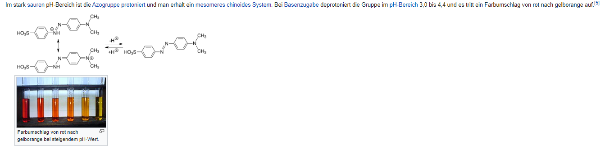
https://pl.wikipedia.org/wiki/Fenoloftaleina
Drugim z ważnych pojęć jest punkt końcowy miareczkowania.
Punkt końcowy miareczkowania –jest to punkt wskazany przez wskaźnik; czyli objętość dodanego titranta kiedy wskaźnik zmienił barwę. Punkt ten jest już wartością empiryczną i odczytywaną z biurety podczas miareczkowania.
Oczywiście w idealnym miareczkowaniu punkt końcowy (teoretyczny) i punkt równoważności (empiryczny) powinny być takie same, ale w praktyce wystarcza jak są podobne – wystarczy aby wskazane objętości miareczkowania były praktycznie identyczne
Zwróć uwagę, że w momencie, w którym zmieni Ci się barwa wskaźnika czyli dodaliśmy odpowiednią ilość titrantu wystarczającą do całkowitego przereagowania analitu możemy obliczyć łatwo mole dodanego titrantu, gdyż objętość titrantu odczytuje z biurety, a jego stężenie powinno być mi znane, gdyż raczej wiem jaki roztwór sporządziłem. Znając mole titrantu, znając stechiometrię reakcji mogę z proporcji obliczyć mole analitu.
Wykresy te przedstawiają zależność pH roztworu od objętości dodanego titranta; pH= f(Vtitrant).
W przypadku tych miareczkowań mam dwie sytuacje: mamy jeden skok miareczkowania(jedną skokową zmianę pH) albo więcej skoków miareczkowania.
Możliwe opcje, jeżeli wykres przedstawia jeden skok miareczkowania:
-miareczkowanie silny kwas –silna zasada
- miareczkowanie silny kwas – słaba zasada JEDNOPROTONOWA
- miareczkowanie silna zasada– słaby kwas JEDNOPROTONOWY
Całkiem sensowne narzędzie do przewidywania krzywych miareczkowania jest tu:
https://ph.lattelog.com/titrage
Z zamieszczonego wykresu możemy z łatwością odczytać objętość dodanego titranta, który potrzebny jest do skoku miareczkowania. Oczywiście ta objętość jest punktem równoważności – objętością potrzebną do zajścia reakcji stechiometrycznie:
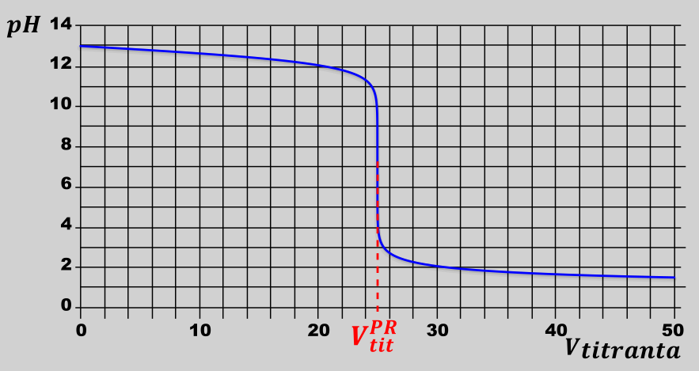
Posiadając tę objętość i stężenie roztworu użytego do miareczkowania możemy z łatwością obliczyć ilość moli titrantu, potrzebną do zajścia reakcji stechiometrycznie:
\[n_{tit} = c_{tit}V_{tit} = c_{tit}V_{PR}\]
Z ilości moli możemy, znając stechiometrię reakcji, obliczyć ilość moli analitu.
Posiadając wykres miareczkowania możemy ustalić również możliwość ustalania rodzaju titrantu (kwas/ zasada) oraz rodzaju analitu (kwas/ zasada), oraz ich mocy (mocny/ słaby kwas/zasada).
W punkcie startowym miareczkowania, na samym początku, w kolbie mamy sam analit, więc analizując pH roztworu na samym początku możemy powiedzieć czy był to kwas czy zasada. Analogicznie na końcu miareczkowania powinniśmy mieć nadmiar titranta, patrząc więc na pH miareczkowania po zakończeniu miareczkowania możemy rozpoznać, czy był to kwas czy zasada. Dodatkowo z wykresu możemy ustalić moc analitu i titranta. Układ słaby kwas– słaba zasada odrzucamy w przedbiegach, jego się nie stosuje. Niektórzy nauczyciele z punktów początkowych i końcowych miareczkowania próbują ustalać czy moc kwasu lub zasady. Nie znając stężenia początkowego analitu i titranta w roztworze po zakończeniu miareczkowania jest to metoda raczej o chuja potłuc; bo np. dla \(pH = 2.5\) to naprawdę nie wiemy czy jest to pH mocnego kwasu trochę rozcieńczony, czy słaby kwas nieszczególnie rozcieńczony. Znając stężenie tego kwasu natomiast rzeczywiście jest możliwie ustalenie stopnia dysocjacji tego kwasu, a z tego określenie jego mocy. Np.: Dla stężenia było kwasu równego \(0.00316\ mol · dm^{- 3}\) oraz \(pH = 2.5\) możemy obliczyć stopień dysocjacji z wzoru \(\alpha = \frac{\left\lbrack H^{+} \right\rbrack}{c_{0}} = \frac{10^{- 2.5}}{0.00316} = 100\%\ \) Taki stopień dysocjacji świadczy o tym, że użyty kwas był mocnym, natomiast dla stężenia kwasu równego 0.1 mol⋅dm-3 również możemy w ten sam sposób obliczyć stopień dysocjacji, wówczas \(\alpha = \ \frac{\left\lbrack H^{+} \right\rbrack}{c_{0}} = \frac{10^{- 2.5}}{0.1} = 0.0316 = 3.16\%\ \) czyli już użyty kwas był kwasem słabym.
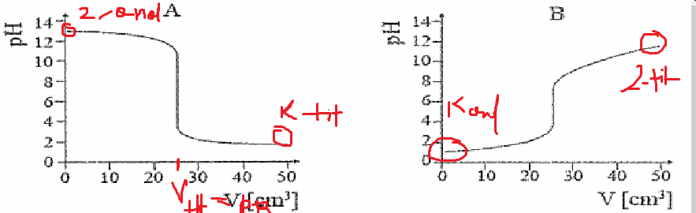
Druga metoda, niezależna od znajomości stężenia kwasu, polega na rozpatrywaniu środka punktu równoważności /\(pH\) środka skoku. Moc użytych reagentów możemy rozpoznać po \(pH\) punktu równoważności (\(pH\) środka skoku). W tym punkcie będziemy mieli najpewniej sól (ale mogą być wyjątki), ale w sumie t najpewniej będzie to jeden związek wynikający z całkowitego przereagowania titrantu i analitu.
Np. Kwas mocny –zasada mocna
\[2NaOH + H_{2}SO_{4} \rightarrow \mathbf{N}\mathbf{a}_{\mathbf{2}}\mathbf{S}\mathbf{O}_{\mathbf{4}} + 2H_{2}O\]
W punkcie równoważności mamy \(Na_{2}SO_{4}\). pH tego związku wynosi 7, gdyż ani kation ani anion nie hydrolizuje
Kwas słaby -mocna zasada
Przykładem jest miareczkowanie kwasu octowego przy użyciu zasady sodowej:
\[CH_{3}COOH + NaOH \rightarrow \mathbf{C}\mathbf{H}_{\mathbf{3}}\mathbf{COONa} + H_{2}O\]
W punkcie równoważności mamy \(CH_{3}COONa\), w zasadzie jony powstałe po hydrolizie tego związku, a więc \(CH_{3}COO^{-}\) oraz \(Na^{+}\). W tym wypadku będzie hydrolizować jon \(CH_{3}COO^{-}\), gdyż wywodzi się on ze słabego kwasu, a więc jest słabą zasadą. Hydrolizę tę możemy zapisać jako:
\[CH_{3}COO^{-} + H_{2}O \rightleftarrows CH_{3}COOH + OH^{-}\]
Odczyn roztworu w punkcie równoważności musi być zasadowy. \(\mathbf{pH} > 7\)
Kwas mocny, a zasada słaba
Przykładem jest miareczkowanie amoniaku za pomocą kwasu solnego:
\[HCl + NH_{3} \rightarrow \mathbf{N}\mathbf{H}_{\mathbf{4}}\mathbf{Cl}\]
W punkcie równoważności mamy \(NH_{4}Cl\), a więc jony \(NH_{4}^{+}\) oraz \(Cl^{-}\). W tym wypadku zachodzić będzie hydroliza jonu amonowego \(NH_{4}^{+}\), gdyż sprzężony on jest z słabą zasad - amoniakiem, a więc jest słabym kwasem:
\[NH_{4}^{+} + H_{2}O \rightleftarrows NH_{3} + H_{3}O^{+}\]
W związku z czym \(pH\) punktu równoważności przy miareczkowaniu silnego kwasu słabą zasadą zawsze będzie kwaśne, a więc poniżej 7.
Podsumowując powyższe rozważania, widzimy, że:
\(pH = 7\) → mocny zasada, mocny kwas
\(pH > 7\ \)→ mocna zasada, słaby kwas
\(pH < 7\) → słaba zasada, mocny kwas.
Jednocześnie w miareczkowaniach kwasowo zasadowych nie używa się układu słaby kwas – słaba zasada, gdyż takie miareczkowanie jest niewyraźne.
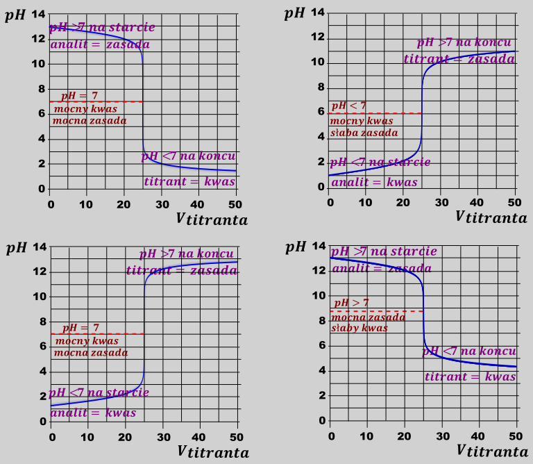
W zadaniach maturalnych możemy spotkać się z pytaniem o reakcję, która powoduje odczyn roztworu w punkcie równoważności. Odpowiedzią jest napisanie jednej z reakcji hydroliz, w których powstają jony \(H_{3}O^{+}\) lub \(OH^{-}\). Dla układów mocny kwas – mocna zasada \(pH\) jest determinowane przez autodysocjacje wody
\[H_{2}O + H_{2}O \rightleftarrows H_{3}O^{+} + OH^{-}\]
Kolejną rzeczą, którą możemy odczytać z wykresu miareczkowania jest możliwość zastosowania określonego wskaźnika do określonego oznaczenia. Dobrany wskaźnik musi zmienić barwę w momencie, w którym mamy skok, aby właściwie wskazać punkt równoważności. Wskaźnik podatny jest na zmianę \(pH\), a więc jego zakres zmiany barwy musi pokrywać się z pionowym – czyli wskazującym na \(pH\) zakresem skoku.
Możliwy zakres zmiany barwy wskaźnika
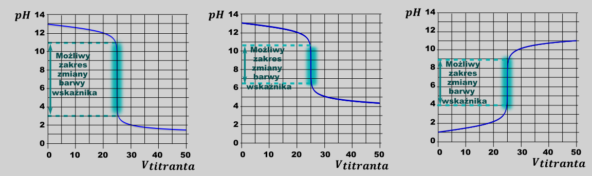
Wskaźnik dobrany w myśl tego kryterium, np. dla drugiego wykresu będzie to np. czerwień krezolowa(7.2 – 8.8) lub fenoloftaleina (8 – 10 ), wskaże punkt końcowy miareczkowania (zmieni barwę) równy punktowi równoważnikowemu miareczkowania. Błękit Nilu (zakres zmiany barwy 10.1 - 11.1) jest wskaźnikiem, który jest na granicy, należy takich wskaźników unikać, jeżeli jest taka możliwość. Dobór natomiast np. zieleni bromokrezolowej (4.0 – 5.6) da wynik zupełnie nieprawidłowy, dodatkowo miareczkowanie nie będzie zmieniało barwy od kropli, tylko barwa będzie się zmieniać w sposób ciągły. Jest to oczywiście niepoprawny układ, wskazujący zupełnie zły wynik:
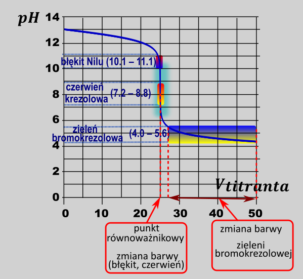
Możemy więc umieścić na
Wskaźniki kwasowo-zasadowe są słabymi kwasami lub słabymi zasadami. Przykładowy wskaźnik o wzorze ogólnym HIn ulega dysocjacji kwasowej i w roztworze wodnym ustala się równowaga:
\[HIn_{aq} + \ H_{2}O\ \rightleftarrows \ H_{3}O_{aq}^{+}\ + \ In_{aq}^{–}\]
Obie formy wskaźnika stanowiące sprzężoną parę kwas–zasada Broensteda: kwasowa –\(\ HIn_{aq}\) i zasadowa – \(In_{aq}^{–}\), nadają roztworom wskaźnika dwie wyraźnie różne barwy. Załóżmy, że forma cząsteczkowa \(HIn_{aq}\) zabarwia roztwór wodny wskaźnika na kolor różowy, a forma jonowa \(In_{aq}^{–}\)– na kolor błękitny. Jeśli do roztworu wskaźnika \(HIn_{aq}\) wprowadzimy kwas lub zasadę, to położenie stanu równowagi – zgodnie z regułą przekory Le Chateliera–Brauna – ulegnie zmianie, co poskutkuje zmianą barwy mieszaniny. W roztworze kwasowym obserwujemy kolor różowy wywołany obecnością drobin \(HIn_{aq}\), a w roztworze zasadowym – wskutek obecności jonów \(In_{aq}^{–}\) – kolor błękitny. Jeżeli stężenia obu form są porównywalne, wskaźnik przyjmuje kolor pośredni. Wyrażenie na stałą dysocjacji jonowej wskaźnika jako słabego kwasu ma postać:
\[K_{in} = \frac{\left\lbrack H_{3}O_{aq}^{+} \right\rbrack\left\lbrack In_{aq}^{-} \right\rbrack}{\left\lbrack Hin_{aq} \right\rbrack}\]
Gdy stężenia form \(In_{aq}^{–}\)i \(HIn_{aq}\) będą równe, to:
\[K_{in} = \frac{\left\lbrack H_{3}O_{aq}^{+} \right\rbrack\left\lbrack In_{aq}^{-} \right\rbrack}{\left\lbrack Hin_{aq} \right\rbrack} = \lbrack H_{3}O^{+}\rbrack\]
Obliczenie ujemnego logarytmu dziesiętnego z obu stron równania prowadzi do wyrażenia: \(pK_{in}\ = \ pH\) Wartość \(pK_{in} \pm 1\) umownie przyjmuje się jako zakres działania wskaźnika kwasowo-zasadowego. Jeżeli do kolby zawierającej analit (roztwór kwasu o nieznanym stężeniu) dodajemy kroplami, z biurety, roztwór titranta (roztwór o odczynie zasadowym, którego stężenie ma znaną wartość), to mówimy o miareczkowaniu kwasowo-zasadowym. Pomiar \(pH\) roztworu analitu w funkcji objętości dodawanego titranta pozwala sporządzić krzywą miareczkowania. Na krzywej wyróżnia się fragment niemalże prostopadły do osi zmiennej niezależnej, który pozwala na odczytanie tzw. punktu równoważnikowego, czyli wartości \(pH\), dla której do roztworu wprowadzono tę samą liczbę moli zarówno kwasu, jak i zasady. W przypadku wskaźnika poprawnie dobranego do takiego miareczkowania oczekuje się, że w zakresie działania tego wskaźnika mieści się punkt równoważnikowy.
Na schemacie przedstawiono parametry, które możemy wyczytać wykresu miareczkowania wykresu zawierającego jeden skok miareczkowania:
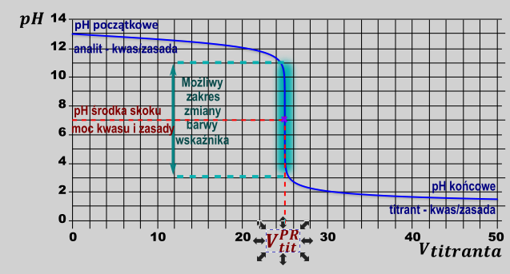
Do kolby zawierającej 25.00\(\ cm^{3}\) kwasu solnego o stężeniu 0.010 \(mol\ \bullet \ dm^{–3}\) wprowadzano kroplami, z biurety napełnionej do objętości 50.0 \(cm^{3}\), wodny roztwór amoniaku o stężeniu 0.020 \(mol\ \bullet \ dm^{–3}\). Przygotowano zestaw wskaźników kwasowo-zasadowych wraz z dotyczącymi ich dodatkowymi informacjami zestawionymi w tabeli:
| Nazwa wskaźnika | pKIn |
|---|---|
| Błękit tymolowy | 1.7 |
| Oranż metylowy | 3.4 |
| Purpurowa bromokrezolowa | 5.8 |
| Błękit bromotymolowy | 7.0 |
| Czerwień fenolowa | 7.9 |
| Fenoloftaleina | 9.4 |
Podaj nazwę wskaźnika, który powinien zostać użyty do wyznaczenia punktu końcowego podczas opisanego miareczkowania kwasowo-zasadowego. Załóż, że końcowa objętość roztworu (w punkcie końcowym miareczkowania) jest równa sumie objętości analitu i titranta.
W PR mam
\[HCl + NH_{3} \rightarrow NH_{4}Cl\]
Czyli punkcie równoważności zachodzi reakcja
\[NH_{4}^{+} + H_{2}O \rightleftarrows NH_{3} + H_{3}O^{+}\]
I wówczas można obliczyć \(pH\), znając stężenie \(NH_{4}^{+}\) w punkcie miareczkowania. Stężenie tego jonu mogę obliczyć z moli \(HCl\) użytych do miareczkowania, oraz objętości analitu i dodanego titranta:
\[n_{HCl} = 0.025·0.01 = 0.00025\ mol\]
\[n_{NH_{3}} = 0.0025 \rightarrow V_{NH_{3}} = \frac{n}{c} = \frac{0.00025}{0.02} = 0.0125\]
\[V_{sum} = 0.0125 + 0.025 = 0.0375\]
\[n_{NH_{4}} = 0.00025\]
\[c_{NH_{4}^{+}} = \frac{n_{NH_{4}^{+}}}{V} = \frac{0.00025}{0.0375} = 0.006667\]
Mając stężenie jonów \(NH_{4}^{+}\) możemy obliczyć \(pH\), rozważając hydrolizę tego jonu jak normalnego układu słabego kwasu. Do tego potrzebujemy wartości stałej dysocjacji kwasowej tego jonu; możemy ją obliczyć w myśl wzoru:
\[K_{a} = \frac{K_{W}}{K_{B}^{NH_{3}}} = \frac{10^{- 14}}{1.78·10^{- 5}} = 0.5617·10^{- 9}\]
Bo \(NH_{4}^{+}\) i \(NH_{3}^{\ }\) stanowią sprzężoną parę kwas – zasada
Dalej postępujemy klasycznie jak dla klasycznego zadania z \(pH\) dla słabego kwasu:
Czy jedno źródło \(H^{+}\)?
TAK, możemy używać wzoru
\[K_{A} = \frac{\left\lbrack H^{+}
\right\rbrack^{2}}{c_{0} - \left\lbrack H^{+}
\right\rbrack}\]
Czy stosunek \(\frac{c_{0}}{K_{a}} > 400?\ \rightarrow \frac{0.006667}{0.5617·10^{- 9}} > 400\ \), a więc możemy używać wzoru uproszczonego:
\[K_{A} = \frac{\left\lbrack H^{+} \right\rbrack^{2}}{c_{0}}\]
Z niego obliczamy stężenie jonów \(H^{+}\) i \(pH\) roztworu:
\[\left\lbrack H^{+} \right\rbrack^{2} = K_{a}c_{0} \rightarrow \left\lbrack H^{+} \right\rbrack = \sqrt{0.5617·10^{- 9}·0.006667} = 1.9·10^{- 6} \rightarrow pH = 5.7\]
Mając wartość pH roztworu jednoznacznie stwierdzamy, że jedynym wskaźnikiem, który pokrywa tę wartość jest purpura bromokrezolowa o \(pK_{in}\) równym 5.8
Są to układy, w których titrant kategorycznie jest silnym elektrolitem (kwasem / zasadą), a analit jest słabym wieloprotonowym elekktrolitem (zasada/ kwasem). Jako analit również mogą być mieszaniny słabych kwasów oraz mieszaniny słabych zasad również z mocnymi kwasami/ zasadami.
Z ilości skoków w miareczkowaniu możemy odczytać ilość różnych wodorów, w podczas danego miareczkowania. Skoki widać oddzielnie jeżeli różnica\(\ pK_{a}\) / \(pK_{b}\) pomiędzy zachodzącymi reakcjami kwasowo - zasadowymi jest większa niż 2.5. W przeciwnym wypadku skoki mogą się nałożyć i stanowią one wówczas jeden, mniej wyraźny skok.
I rozważmy miareczkowanie mieszaniny \(NaHCO_{3}\) i \(Na_{2}CO_{3}\) przy użyciu \(HCl\). Roztwór taki początkowo zawiera jony \(Na^{+}\) , \(HCO_{3}^{}\) oraz \(CO_{3}^{2}\). pH jego jest oczywiście zasadowe z uwagi na zachodzącą reakcję:
\[CO_{3}^{2 -} + H_{2}O \rightleftarrows HCO_{3}^{-} + OH^{-}\]
Podczas miareczkowania kwasem ( dodawania jonów \(H^{+}\)) oczywiście, jako pierwsze reagują jony \(CO_{3}^{2}\), z uwagi na silniejsze właściwości zasadowe (większa wartość\(K_{B}\)). \(pH\) spada więc spokojnie przy dodawaniu kwasu, jeżeli występują jeszcze jony \(CO_{3}^{2 -}\) - mamy wtedy układ roztwór buforowy \(CO_{3}^{2 -}\) - \(HCO_{3}^{-}\), zachodzi wtedy reakcja
\[CO_{3}^{2 -} + H^{+} \rightarrow HCO_{3}^{-}\]
Pierwszy skok będziemy przy całkowitym wyczerpaniu się jonów \(CO_{3}^{2 -}\). Dodatek kwasu \(HCl\), powoduje wtedy wiązanie jonów \(HCO_{3}^{-}\), w myśl reakcji
\[HCO_{3}^{-} + H^{+} \rightarrow H_{2}O + CO_{2}\]
Reakcja ta zachodzi do całkowitego wyczerpania się jonów \(HCO_{3}^{-}\), wyczerpanie ich jest powodem drugiego skoku \(pH\). Wówczas nie mamy już żadnych jonów mogących związać jony \(H^{+}\), pozostaje nam rozcieńczanie tych jonów. Oczywiście powoduje to dalszy spadek \(pH\) roztworu, ale nie jest to już skokowa zmiana. W związku, z czym wykres miareczkowania wygląda następująco:
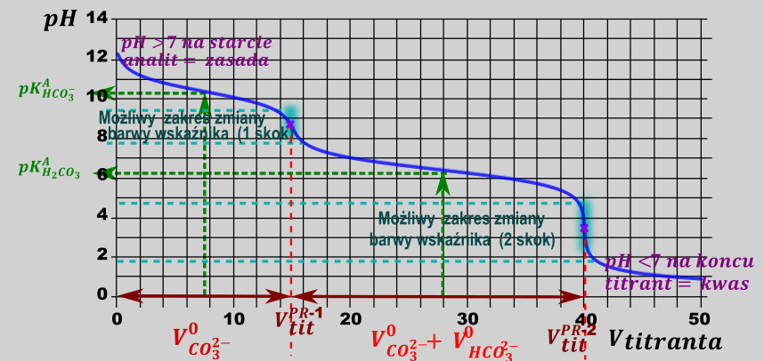
Zwróć uwagę na tom, że ile skoków miareczkowania tyle kwaśnych wodorów w próbce różnych (lub miejsce gdzie te wodory przyłączysz). Właściwy dobór wskaźników, aby pokrywały odpowiednie zakresy pionowe zakresy skoków (wartości \(pH\)) umożliwia zmiareczkowanie jednego związku jak i drugiego związku, a więc powiedzenie, jakie ilości związków mamy początkowo w tej mieszaninie.
W celu ustalenia składu stałej mieszaniny wodorowęglanu sodu i węglanu sodu jej próbkę rozpuszczono w wodzie i przeprowadzono dwuetapową analizę otrzymanego roztworu.
Etap I: Do badanego roztworu dodano kilka kropli alkoholowego roztworu fenoloftaleiny i dodawano z biurety kwas solny, do momentu zaniku barwy wskaźnika. Jon węglanowy jest mocniejszą zasadą niż jon wodorowęglanowy, więc w roztworze zachodziła reakcja opisana równaniem:
\[CO_{3}^{2 -} + H_{3}O^{+} \rightarrow HCO_{3}^{-} + H_{2}O\]
Odbarwienie fenoloftaleiny świadczyło o całkowitej przemianie jonów \(CO_{3}^{2 -}\) w jony \(HCO_{3}^{-}\).
Etap II: Do otrzymanej mieszaniny dodano kilka kropli wodnego roztworu oranżu metylowego i dalej dodawano z biurety kwas solny do chwili, gdy nastąpiła zmiana barwy wskaźnika. Ta zmiana oznaczała, że cały wodorowęglan sodu przereagował zgodnie z równaniem:
\[HCO_{3}^{-} + H_{3}O^{+} \rightarrow 2H_{2}O + CO_{2}\]
Kwas solny użyty w obu etapach doświadczenia miał stężenie \(0.2\ mol\ · \ dm^{- 3}\), a jego objętość niezbędna do odbarwienia fenoloftaleiny w etapie I była równa \(24.6\) \(cm^{3}\). Natomiast łącznie w obu etapach zużyto \(59.8\) \(cm^{3}\) kwasu solnego (objętość odczytana z biurety w etapie II).
Oblicz w procentach masowych zawartość węglanu sodu w analizowanej mieszaninie. Przyjmij, że masy molowe węglanu sodu i wodorowęglanu sodu są równe: \(M_{Na_{2}CO_{3}}\ = \ 106\ g · mol^{–1}\) oraz \(M_{NaHCO_{3}}\ = \ 84\ g · mol^{–1}\)
.
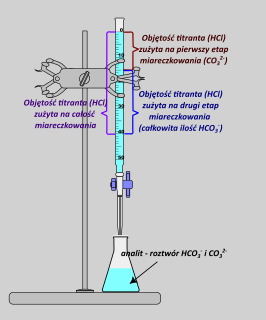
Możemy łatwo obliczyć ilość moli \(HCl\) użytego w pierwszym etapie miareczkowania oraz całkowitą ilość \(HCl\) użytego na całe miareczkowanie. Mając te dwie ilości moli możemy obliczyć ilość moli HCl zużytego w drugim etapie jako różnicę tych wyjściowych ilości moli. Ilości te są równe:
\[n_{HCl}^{1etap} = 0.2·0.0246 = 0.00492\]
\[n_{HCl}^{sum} = 0.2·0.0598 = 0.01196mol\]
\[n_{HCl}^{2etap} = 0.01196 - 0.00492 = 0.00704\]
Kolejno możemy zrobić tabelkę bilansu ilości moli dla etapu pierwszego. W pierwszym etapie zahodzi reakcja:
\[CO_{3}^{2 -} + H_{3}O^{+} \rightarrow HCO_{3}^{-} + H_{2}O\]
Oczywiście idea miareczkowania jest taka, że punkt końcowy miareczkowania w etapie pierwszym odpowiada całkowitemu przereagowaniu obu substratów – jonu \(CO_{3}^{2 -}\) oraz dodanego kwasu – jonów H+ podczas miareczkowania, a więc końcowe ilości moli obu jonów spadają do zera. Jednocześnie w mieszaninie początkowo znajdują się również jony \(HCO_{3}^{-}\) co powinniśmy odnotować w tabelce, ich ilość wzrasta na skutek zachodzącej reakcji:
| \[CO_{3}^{2 -}\] | \[H^{+}\] | \[HCO_{3}^{-}\] | |
|---|---|---|---|
| \[n^{0}\] | \[n_{CO_{3}^{2 -}}^{0}\] | \[n_{H^{+}}^{Ietap} = 0.00492\] | \[n_{HCO_{3}^{-}}^{0}\] |
| \[\Delta n\] | \[- x\] | \[- x\] | \[+ x\] |
| \[n^{k}\] | \[n_{CO_{3}^{2 -}}^{0} - x = 0\] | \[n_{H^{+}}^{Ietap} - x = 0\] | \[n_{HCO_{3}^{-}}^{0} + x\] |
Znając ilość moli jonów \(H^{+}\) użytych w reakcji możemy z równania\(n_{H^{+}}^{1etap} - x = 0\) obliczyć \(\mathbf{x}\) jako równego ilości użytych jonów. Obliczona wartość jest też równa początkowej ilości jonów \(CO_{3}^{2 -}\)- oraz powstałych w pierwszym etapie ilości jonów \(HCO_{3}^{-}\).
Kolejno przechodzimy do analizy drugiego etapu miareczkowania. W tym etapie zachodzi reakcja:
\[HCO_{3}^{-} + H_{3}O^{+} \rightarrow 2H_{2}O + CO_{2}\]
Możemy dla tego etapu również zrobić tabelkę związaną z stechiometrią reakcji. Początkowa ilość moli \(HCO_{3}^{-}\) sumie tych reagentów dodanych na początku reakcji oraz powstałych na skutek etapu I, a więc można powiedzieć, iż w tym etapie miareczkowane są oba węglany. Oczywiście ilość moli dodanych \(H_{3}O^{+}\) podczas drugiego miareczkowania jest równa początkowej ilości jonów \(HCO_{3}^{-}\), ilości obu tych reagentów spadają do zera w punkcie równoważności.
| \[HCO_{3}^{-}\] | \[H^{+}\] | \[CO_{2}\] | |
|---|---|---|---|
| \[n_{HCO_{3}^{-}}^{0} + 0.00492\] | \[n_{H^{+}}^{IIetap} = 0.00704\] | ||
| \[- x\] | \[- x\] | \[+ x\] | |
| \[n_{HCO_{3}^{-}}^{0} + 0.00492 - x = 0\] | \[n_{H^{+}}^{IIetap} - x = 0\] \[x = n_{H^{+}}^{IIetap} = 0.00704\] |
\[x\] |
Prowadzi nas to do równania, które rozwiązując da nam wartość początkowej ilości jonów \(HCO_{3}^{-}\)
\[n_{HCO_{3}}^{0} + 0.00492 = 0.00704\]
\[n_{HCO_{3}^{-}}^{0} = 0.00212\]
Mając obliczone początkowe ilości moli węglanu i wodorowęglanu możemy obliczyć ich masę, a z tego zawartość procentową w badanej próbce
\[n_{Na_{2}CO_{3}}^{0} = n_{CO_{3}^{2 -}}^{0} = 0.00492 \rightarrow m_{Na_{2}CO_{3}}^{0} = n_{Na_{2}CO_{3}}^{0}M_{Na_{2}CO_{3}}^{\ } = 0.00492 · 106 = 0.52152\]
\[n_{NaHCO_{3}}^{0} = n_{HCO_{3}^{-}}^{0} = 0.00212 \rightarrow m_{NaHCO_{3}}^{0} = n_{NaHCO_{3}}^{0}M_{NaHCO_{3}}^{0} = 0.00212 · 84 = 0.17808\]
\[\%_{Na_{2}CO_{3}}^{mas} = \frac{m_{Na_{2}CO_{3}}^{0}}{m_{Na_{2}CO_{3}}^{0} + m_{NaHCO_{3}}^{0}} = \frac{0.52152}{0.52152 + 0.17808} = 74.5\%\]
\[\%_{NaHCO_{3}}^{mas} = \frac{m_{NaHCO_{3}}^{0}}{m_{Na_{2}CO_{3}}^{0} + m_{NaHCO_{3}}^{0}} = \frac{0.17808}{0.52152 + 0.17808} = 25.5\%\]
Poniżej przedstawiono informacje pozwalające porównać moc trzech substancji, które wykazują kwasowy charakter chemiczny w roztworach wodnych (\(T\) = 25 °C, \(p\) = 1000 hPa):
| Substancja (\(H_{2}X\)) | \[\mathbf{pK}\mathbf{a}_{\mathbf{1}}\] | \[\mathbf{pK}\mathbf{a}_{\mathbf{2}}\] |
|---|---|---|
| Benzeno – 1,2 – diol \(C_{6}H_{4}(OH)_{2}\) | 9.34 | 12.6 |
Kwas butanodiowy \[\mathbf{HOOC\ –\ }\left( \mathbf{C}\mathbf{H}_{\mathbf{2}} \right)_{\mathbf{2}}\mathbf{\ - \ COOH}\] |
4.21 | 5.64 |
Tlenek siarki (IV), \({\mathbf{S}\mathbf{O}_{\mathbf{2}}}^{aq}\) \({\lbrack H}_{2}SO_{3}\rbrack\) |
1.85 | 7.20 |
Próbkę wodnego roztworu każdej z substancji (analitu) o objętości 10.0 \(cm^{3}\) i stężeniu molowym 0.020 \(mol · dm^{–3}\), umieszczano w kolbie i miareczkowano roztworem titranta: \(NaOH_{aq}\) o stężeniu molowym 0.020 \(mol · dm^{–3}\). Krzywe miareczkowania oznaczone literami A, B i C przedstawiono na wykresie.
Punkt równoważnikowy (\(PR\)) to punkt na krzywej miareczkowania odpowiadający takiej ilości titranta, która jest równoważna stechiometrycznej ilości analitu. W pobliżu PR podczas miareczkowania zachodzą wyraźne zmiany wartości \(pH\), zwane skokiem miareczkowania. Schemat przedstawia zmiany barwy wskaźnika kwasowo-zasadowego – błękitu tymolowego – w roztworach o różnej wartości pH (zakresy zmiany barwy: 1.2– 2.8 oraz 8.0– 9.6):
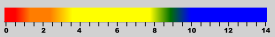
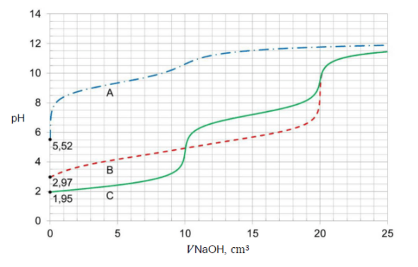
Oceń, prawdziwość poniższych zdań. Zaznacz P, jeśli zdanie jest prawdziwe, albo F – jeśli jest fałszywe.
| 1. | Krzywa C obrazuje zmiany \(pH\) podczas miareczkowania najmocniejszego kwasu, a krzywa A – zmiany \(pH\) podczas miareczkowania kwasu pośredniej mocy spośród wymienionych. | P | F |
|---|---|---|---|
| 2. | W przebiegu krzywej B jest widoczny jeden skok miareczkowania, a \(pH\) w punkcie równoważnikowym miareczkowania okazuje się większe od 7 | P | F |
Zdanie pierwsze jest nieprawdziwe. W celu porównania mocy kwasów możemy rzeczywiście porównać \(pH\) początkowe miareczkowanych roztworów, gdyż kwasy mają to samo stężenie, a więc \(pH\) będzie zależeć tylko od jego mocy, a więc im silniejszy kwas tym \(pH\) będzie bardziej kwaśne. Oczywiście porównując początkowe \(pH\) widzimy, iż najbardziej kwaśny jest związek C, a najmniej związek A. Wykorzytując tą wiedzę możemy z łatwością przypisać wykres A do związku o największej pierwszej stałej pKa (najmniej kwasowemu) – benzeno -1,2 – diolowi, kolejno wykres B odpowiada związkowi o średniej wartości kwasowości – a więc i średniej wartości Ka – czyli kwasowi butanodiowemu. Wykres C odpowiada związkowi o najsilniejszym charakterze kwasowym, a więc \(SO_{2}\).Podpunkt drugi zadania – rzeczywiście na wykresie przedstawiającym związek B widzimy jeden skok miareczkowania, skok ten odpowiada miareczkowaniu obu protonów kwasu butanodiowego. Miareczkowanie obu protonów jednocześnie zachodzi z uwagi na podobne wartości ich stałych dysocjacji. pH punktu równoważnikowego odczytujemy jako środek pionowej linii skoku :
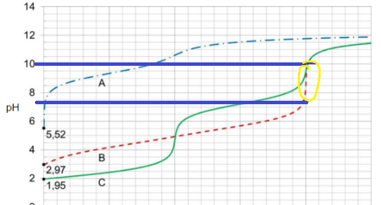
Wartość środkowa pH skoku wynosi \(\frac{7 + 10}{2} = 8.5\), a więc jest większa niż 7. Podpunkt zadania jest więc poprawny.
W wodnych roztworach kwasów diprotonowych (\(H_{2}X\)) oraz podczas miareczkowania ich roztworów za pomocą \(NaOH\) (aq) zachodzi wiele procesów, np.:
| proces | równanie |
|---|---|
| I | \[H_{2}X\ + \ H_{2}O\ \rightleftarrows \ HX^{–}\ + \ H_{3}O^{+}\] |
| II | \[HX^{–}\ + \ H_{2}O\ \rightleftarrows \ X^{2–}\ + \ H_{3}O^{+}\] |
| III | \[HX^{–}\ + H_{2}O\ \rightleftarrows \ H_{2}X\ + \ OH^{–}\] |
| IV | \[X^{2–}\ + \ H_{2}O\ \rightleftarrows \ HX^{–}\ + \ OH^{–}\] |
Na podstawie krzywej miareczkowania oznaczonej literą C wskaż, który z procesów I–IV decyduje o \(pH\) roztworu obecnego w kolbie, w różnych momentach miareczkowania. Uzupełnij poniższą tabelę. Wpisz numer procesu lub numery procesów:
| proces | równanie |
|---|---|
| przed wprowadzeniem \(NaOH\) | |
| w chwili wprowadzenia 10 \(cm^{3}\) roztworu \(NaOH\) | |
| w chwili wprowadzenia 20 \(cm^{3}\) roztworu \(NaOH\) |
W pierwszym etapie musimy stwierdzić w jakiej formie protonowania występuje kwas po dodaniu określonej objętości titr anta. Oczywiście bez dodaniu \(NaOH\) formą dominującą jest kwas w formie całkowicie protonowanej (\(H_{2}X\)), więc równaniem odpowiadającym ze \(pH\) w tym punkcie jest równanie pierwsze. Po dodaniu \(10\ cm^{3}\) roztworu \(NaOH\) - jest to objętość odpowiadająca dodaniu jednego ekwiwalentu zasady do kwasu formą dominującą kwasu będzie kwas z urwanym jednym wodorem, a więc\(HX^{-}\). Przeważać musi, więc reakcja II lub III, która dominuje najłatwiej sprawdzić jest po \(pH\) ustalonym po dodaniu takiej objętości zasady:
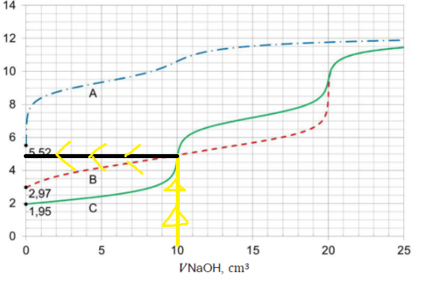
Jednoznacznie widać, iż pH w tym momencie jest równe ok. 5 – kwaśne, a więc dominować muszą jony \(H^{+}\), nie \(OH^{}\). Przeważać musi więc reakcja hydrolizy formy \(HA^{-}\), w której powstają jony \(H^{+}\), a nie \(OH^{-}\):
\[HX^{–}\ + \ H_{2}O\ \rightleftarrows \ X^{2–}\ + \ H_{3}O^{+}\]
Dodanie 20 \(cm^{3}\) \(NaOH\) odpowiada dodatkowi dwóch ekwiwalentów jonów \(OH^{}\) do roztworu kwasu, co możemy dowodzi urwania dwóch wodorów z kwasu \(H_{2}X\) i powstania formy całkowicie deprotonowanej \(X^{2–}\). Forma to hydrolizować musi z utworzeniem jonów \(OH^{–}\), czego dowodzi zasadowy odczyn roztworu oraz oczywiście brak wodorów w powstałej formie deprotonowanej \(X^{2–}\). Reakcją, która to odzwierciedla jest reakcja czwarta:
\[X^{2–}\ + \ H_{2}O\ \rightleftarrows \ HX^{–}\ + \ OH^{–}\]
Przeanalizuj krzywe miareczkowania i rozstrzygnij, czy można odróżnić wszystkie badane roztwory przy użyciu błękitu tymolowego po wprowadzeniu 4 i 14 \(cm^{3}\) titranta.
Zaznacz słowo TAK albo NIE przy każdym stwierdzeniu.:
| Po wprowadzeniu 4 \(cm^{3}\) titranta możliwe jest odróżnienie analitów. | TAK | NIE |
|---|---|---|
| Po wprowadzeniu 14 \(cm^{3}\) titranta możliwe jest odróżnienie analitów. | TAK | NIE |
Najłatwiej to zadanie rozwiązać nakładając na wykres miareczkowania schemat zmiany barwy wskaźnika.
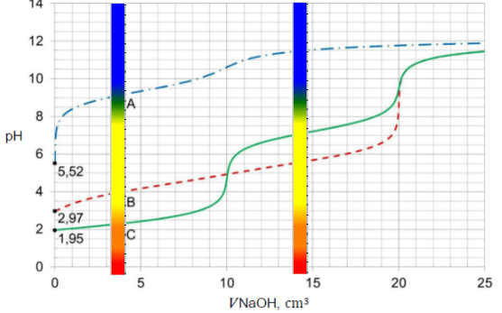
Na tak sporządzonym wykresie jednoznacznie widać, iż po dodaniu 4 \(cm^{3}\) roztworu titranta do badanych roztworów roztwór C przyjmie barwę pomarańczową, roztwór B żółtą, a A niebieskozieloną, co umożliwi jednoznaczne rozróżnienie tych roztworów. Z kolej po dodaniu 14 \(cm^{3}\) roztworu titranta roztwór C oraz B będzie żółty natomiast roztwór A będzie niebieski, więc nie będziemy umieli odróżnić roztworu C i B.